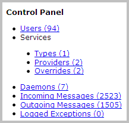

Admin Controls
Nimbul administrators can access the following information through the Admin Controls option of the main Nimbul menu.

Users
Services
Use the Services area to define services that need to be exposed to the rest of your infrastructure. After you have set up services, Nimbul will monitor the server for “ready” instances. If a “ready” instance is found, its IP address will be used to resolve the service’s DNS name.
Think of services as a way to override your standard DNS records in some cases but not others (e.g., source control services for certain accounts only). You can also set up a service for DynDNS.
To set up a service, complete these steps:
- In the main Nimbul menu, click Admin Controls.
- Click Services > Types.
- Add and edit service types, specifying fully qualified domain names and descriptions.
- Go back to the main Admin Controls page and click Services > Service Providers.
- Add and edit service providers, specifying the account, cluster and server to which the provider applies.
- Go back to the main Admin Controls page and click Services > Overrides.
- Specify any service overrides, by provider account.
After you have set up services, review the DNS tabs for your provider accounts to ensure that the Service-Related DNS Records area is correct.
Daemons
In the Daemons area, you can start, stop and restart various daemons. You may need to restart daemons if information is not being updated for certain objects (e.g., if instances never move from “pending” to “running”).
Incoming and Outgoing Messages
Use these links to review system messages. The summary information includes provider accounts, handlers and states. You can also edit and delete messages.
Exceptions
Click Exceptions to view logged exceptions by date, type and controller/action.